Modul 8: HTTP Request dan Integrasi API pada ResepKu
Integrasi REST API merupakan fondasi penting dalam pengembangan aplikasi mobile modern agar data tidak lagi bergantung pada penyimpanan statis di dalam kode sumber (hardcoded). Pada Modul Praktikum VIII ini, aplikasi ResepKu ditransformasikan dari penggunaan 6 data dummy lokal menjadi aplikasi dinamis yang terhubung langsung ke layanan REST API https://dummyjson.com/recipes menggunakan package http. Proses integrasi ini mencakup serialisasi objek Dart melalui konstruktor factory Recipe.fromJson, pemisahan logika jaringan ke dalam class layanan terpusat (RecipeService) yang didaftarkan melalui Provider, pengelolaan state asinkronus menggunakan FutureBuilder lengkap dengan penanganan loading state, error state, serta mekanisme pull-to-refresh, hingga pengiriman data resep baru ke server menggunakan metode HTTP POST.
fromJson untuk model Recipe.GET dengan package http di dalam sebuah class service (RecipeService).FutureBuilder lengkap dengan loading state, error state, tombol coba lagi, dan pull-to-refresh.POST dari sebuah form, lalu menangani hasilnya.
Pengamatan dilakukan dengan mengakses endpoint https://dummyjson.com/recipes?limit=50 melalui browser untuk memetakan struktur objek JSON terluar dan tipe data setiap atribut resep sebelum diimplementasikan ke dalam Recipe.fromJson.
| Pertanyaan Pengamatan | Jawaban |
|---|---|
Nilai total |
50 |
| Key yang berisi daftar resep | recipes |
Tipe nilai rating pada resep pertama (int atau double?) |
double (bernilai 4.6 pada resep pertama, namun pada beberapa resep lain bernilai bulat seperti 5 sehingga di-parsing menggunakan num.toDouble()) |
Tiga key resep yang belum ada di model Recipe Modul 7 |
instructions, tags, userId (serta reviewCount dan mealType) |
Setelah RecipeService dibuat dan dihubungkan ke HomePage menggunakan FutureBuilder, aplikasi menampilkan indikator loading sesaat sebelum merender 50 resep dari server. Pada halaman detail versi CustomScrollView dan SliverAppBar, bagian Langkah memasak ditambahkan menggunakan SliverToBoxAdapter dan SliverList.builder.
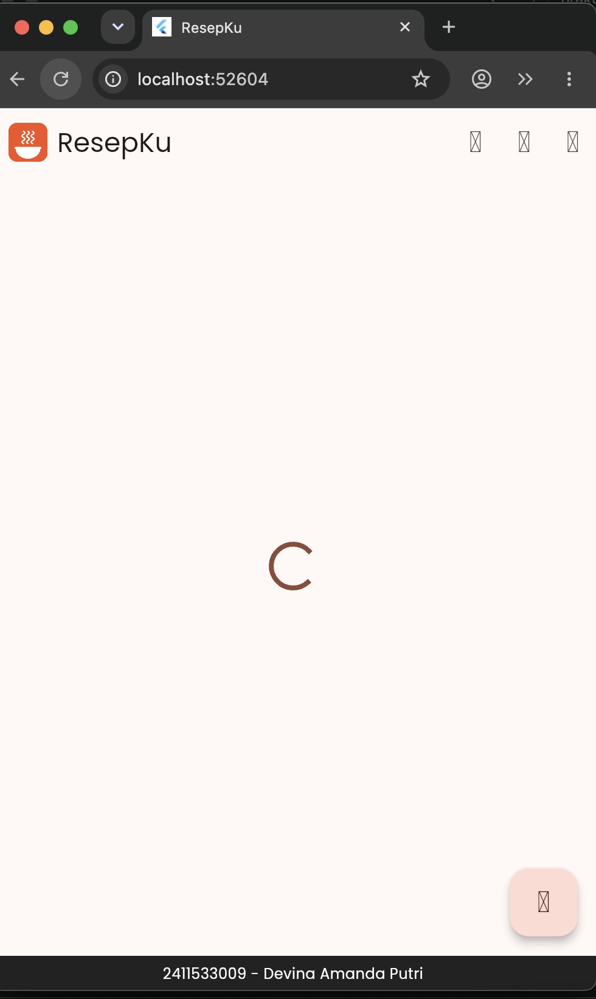
Checkpoint 1a: Indikator loading (CircularProgressIndicator) saat proses fetch data dari server berlangsung
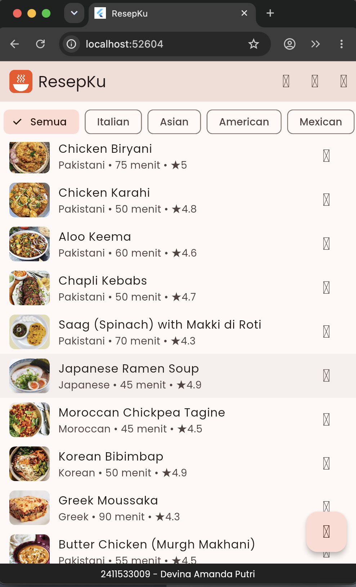
Checkpoint 1b: Halaman Home menampilkan daftar resep baru dari server dummyjson.com beserta footer identitas
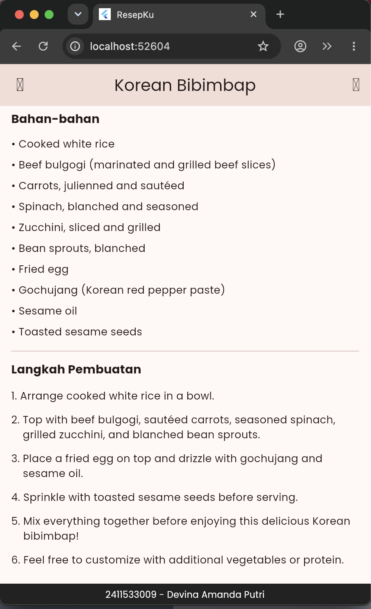
Checkpoint 1c: Halaman Detail (SliverAppBar) menampilkan daftar langkah memasak beserta footer identitas
Pengujian ketahanan jaringan dilakukan dengan memutus koneksi ke endpoint API untuk memverifikasi munculnya widget ErrorView beserta tombol "Coba lagi", dilanjutkan dengan pengujian RefreshIndicator untuk memuat ulang data tanpa menghilangkan daftar resep yang sedang tampil.
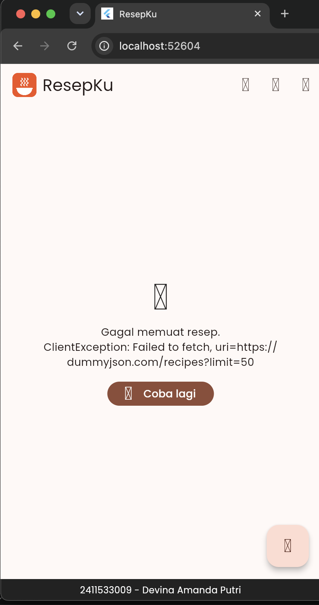
Checkpoint 2a: Tampilan ErrorView dan tombol "Coba lagi" saat koneksi ke server terputus
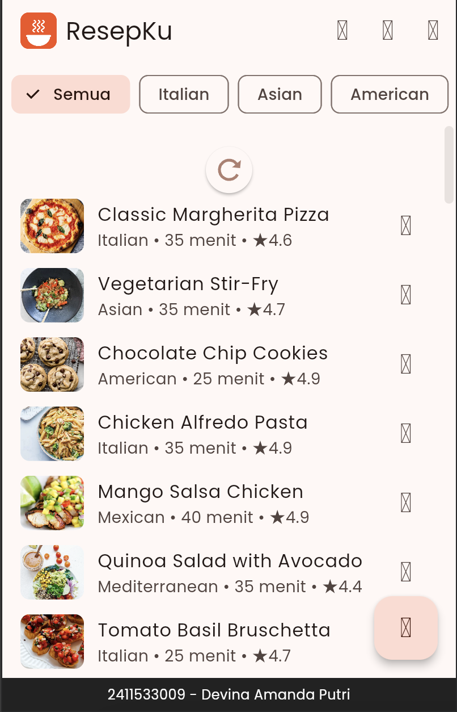
Checkpoint 2b: Animasi pull-to-refresh berjalan di bagian atas daftar resep
Halaman form AddRecipePage dihubungkan melalui tombol FloatingActionButton pada halaman utama. Form dilengkapi validasi input sebelum mengirimkan body JSON ke endpoint POST /recipes/add, yang kemudian merespons dengan mengembalikan ID baru pada SnackBar.
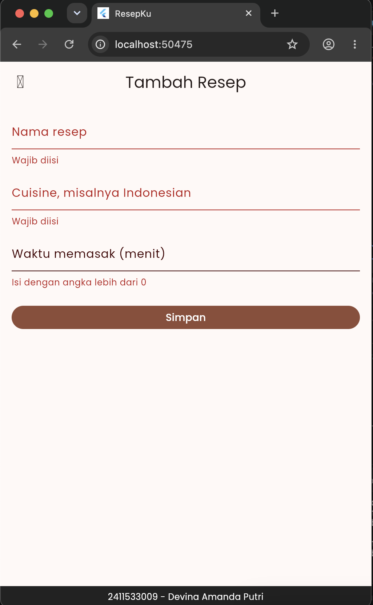
Checkpoint 3a: Validasi form menampilkan pesan "Wajib diisi" saat tombol Simpan ditekan dalam keadaan kosong
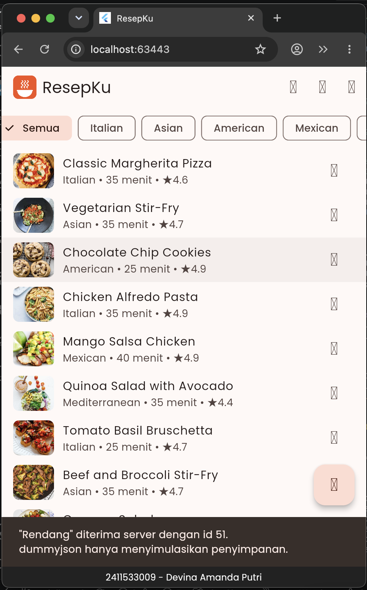
Checkpoint 3b: SnackBar menampilkan konfirmasi resep "Rendang" diterima server beserta ID baru
Berikut adalah hasil verifikasi menyeluruh terhadap ketujuh skenario fungsionalitas aplikasi ResepKu setelah terintegrasi penuh dengan REST API:
| No | Skenario Pengujian | Hasil yang Didapat |
|---|---|---|
| 1 | Buka aplikasi | Sesuai (✔) — Indikator loading tampil sesaat, kemudian 50 resep dari server berhasil dimuat (dibuktikan pada Checkpoint 1a & 1b). |
| 2 | Tandai dua resep sebagai favorit, lalu tarik untuk refresh | Sesuai (✔) — Status favorit kedua resep tetap terjaga dengan ikon hati berwarna merah dan badge tetap menunjukkan angka 2. |
| 3 | Tekan tombol grid, lalu kembali ke list | Sesuai (✔) — Perubahan tata letak berjalan mulus tanpa memicu indikator loading baru maupun request ulang ke server. |
| 4 | Buka detail salah satu resep | Sesuai (✔) — Halaman detail menampilkan foto, informasi porsi, daftar bahan, serta langkah memasak secara lengkap (dibuktikan pada Checkpoint 1c). |
| 5 | Mode pesawat (koneksi terputus), lalu hot restart | Sesuai (✔) — Aplikasi menangkap error jaringan dan menampilkan widget ErrorView lengkap dengan tombol "Coba lagi" (dibuktikan pada Checkpoint 2a). |
| 6 | Matikan mode pesawat, tekan "Coba lagi" | Sesuai (✔) — Koneksi pulih dan seluruh daftar 50 resep berhasil dimuat ulang ke layar utama. |
| 7 | Kirim resep baru melalui tombol + | Sesuai (✔) — Form tertutup setelah data dikirim dan muncul SnackBar konfirmasi berisi ID baru dari server (dibuktikan pada Checkpoint 3b). |
FavoriteProvider memeriksa kesamaan item berdasarkan nilai properti unik id melalui ekspresi _items.any((r) => r.id == recipe.id), bukan berdasarkan kesamaan referensi instans objek di dalam memori. Meskipun proses refresh menghasilkan instans objek Recipe baru hasil dekode JSON, ID resep tersebut tetap identik dengan data yang tersimpan di dalam daftar favorit.
build()?_recipesFuture diinisialisasi satu kali di dalam method initState(). Jika pemanggilan fetchRecipes() ditulis langsung di dalam method build(), setiap kali setState() dipanggil saat tombol ditekan, Flutter akan membuat ulang objek Future baru dan mengirim request HTTP berulang kali ke server sehingga indikator loading terus muncul setiap kali tampilan diganti.
HomePage tidak memanggil http.get secara langsung, melainkan melalui RecipeService. Sebutkan dua keuntungan cara ini.http.Client dapat disuntikkan dan diganti dengan MockClient tanpa memerlukan koneksi internet nyata.
dummyjson.com/recipes/add bersifat simulasi publik yang mengembalikan respons sukses beserta ID baru tanpa benar-benar menyimpan entri tersebut ke dalam basis data permanen server. Pada aplikasi produksi dengan server sungguhan, data yang baru ditambahkan umumnya langsung dimasukkan ke dalam state lokal aplikasi (misalnya di-insert ke awal list) menggunakan objek kembalian dari respons POST agar langsung terlihat oleh pengguna tanpa harus melakukan fetch ulang seluruh daftar.
AddRecipePage terdapat if (!mounted) return; setelah await. Jelaskan skenario yang dicegah oleh baris tersebut.BuildContext pada widget yang sudah tidak aktif) ketika pengguna menekan tombol kembali untuk menutup halaman form saat proses request await service.addRecipe(...) masih berjalan di latar belakang. Jika widget sudah dihapus dari widget tree (mounted == false), eksekusi fungsi dihentikan sebelum memanggil Navigator.pop atau setState.
Penambahan method searchRecipes(String query) pada RecipeService serta pembuatan halaman SearchPage yang dibuka melalui ikon kaca pembesar di AppBar HomePage. Pencarian dieksekusi saat pengguna menekan tombol Enter (onSubmitted) menggunakan FutureBuilder dengan penanganan status loading, error, dan hasil kosong.
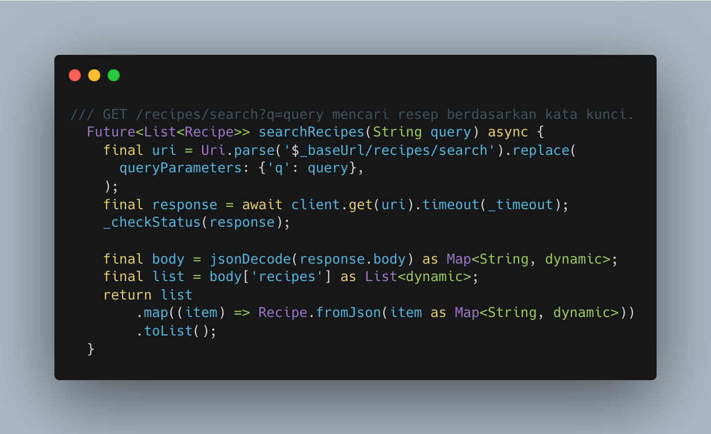
Potongan Kode 1. Method searchRecipes pada recipe_service.dart
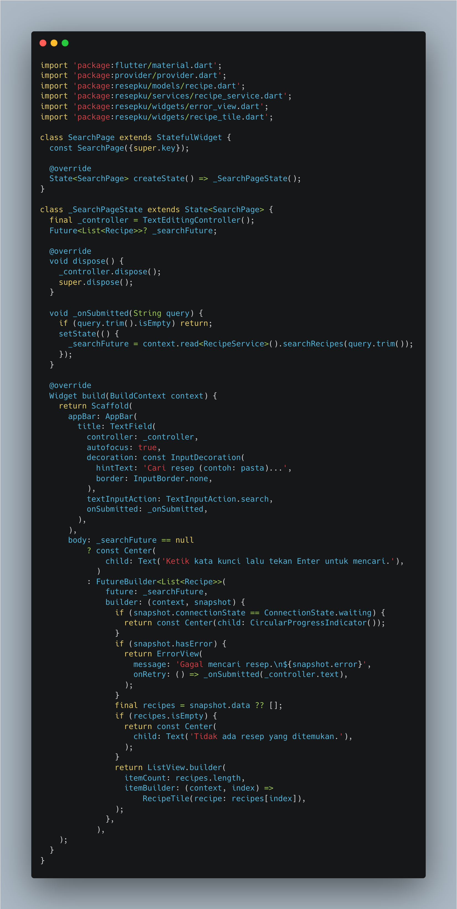
Potongan Kode 2. Implementasi SearchPage dengan TextField dan FutureBuilder
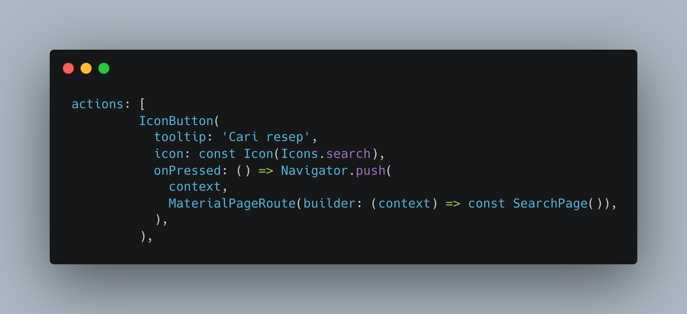
Potongan Kode 3. Penambahan IconButton search di AppBar HomePage
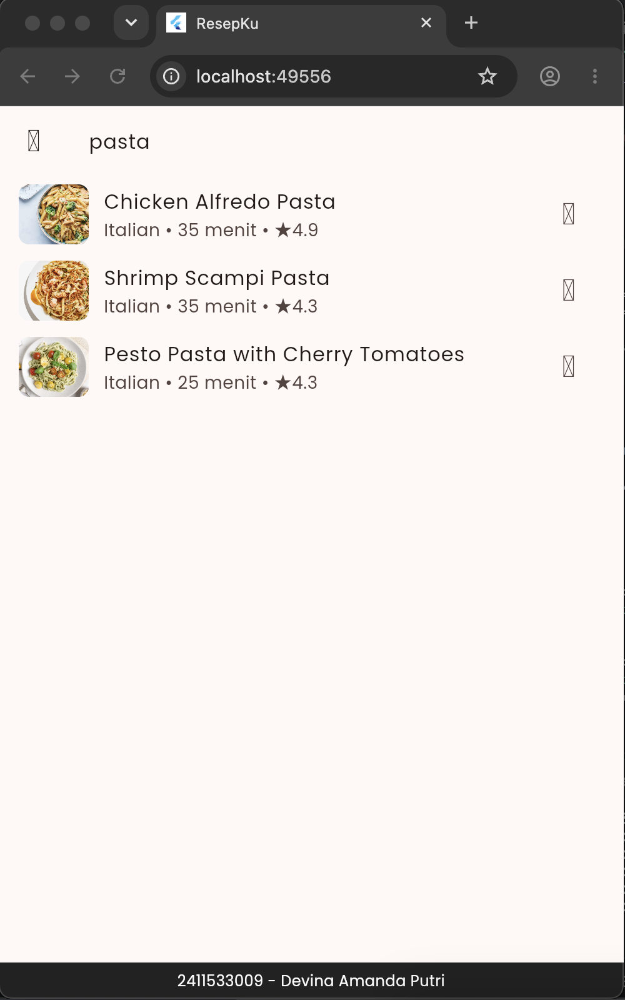
Tampilan Latihan 1a: Hasil pencarian resep berdasarkan kata kunci yang dimasukkan
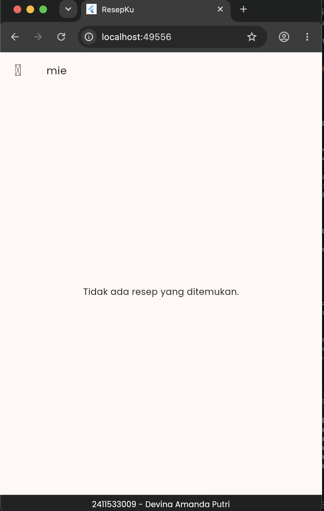
Tampilan Latihan 1b: Pesan penanganan saat kata kunci pencarian tidak ditemukan
Penambahan method updateRecipe (PUT /recipes/{id}) dan deleteRecipe (DELETE /recipes/{id}) pada RecipeService, serta menu titik tiga (PopupMenuButton) pada SliverAppBar di halaman detail untuk memicu AlertDialog ubah nama dan dialog konfirmasi hapus resep.
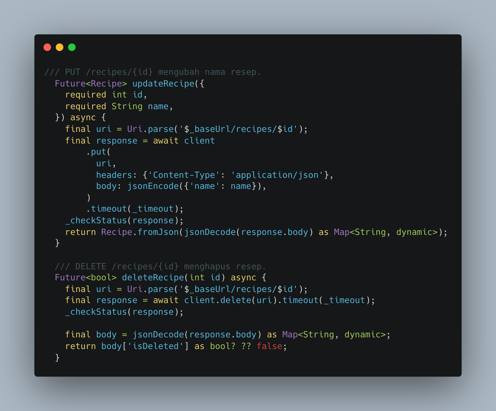
Potongan Kode 3. Method updateRecipe dan deleteRecipe pada recipe_service.dart
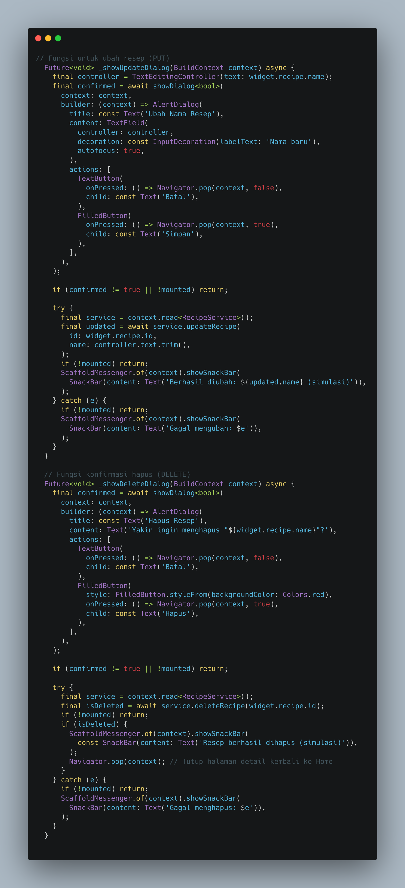
Potongan Kode 4. Implementasi PopupMenuButton dan AlertDialog pada detail_page.dart
Tampilan Latihan 2a: Proses Ubah Nama Resep (PUT)
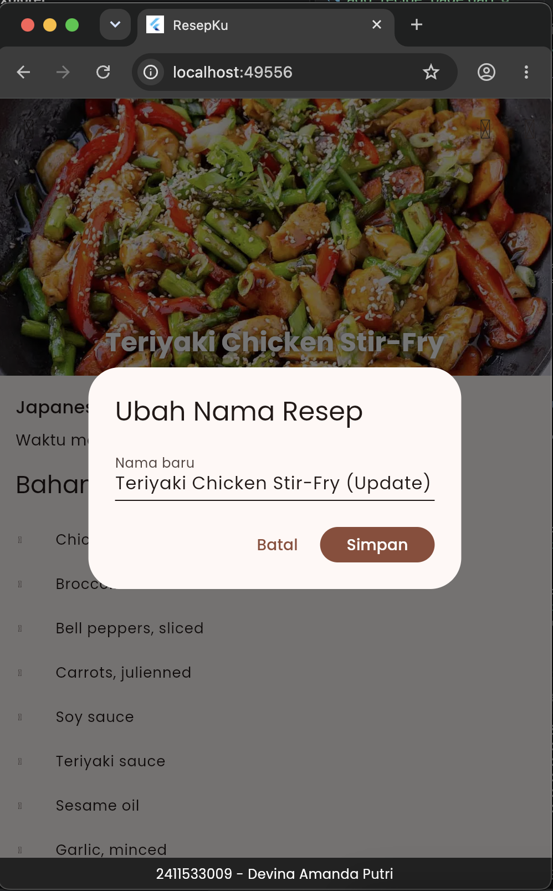
1. Dialog AlertDialog ubah nama
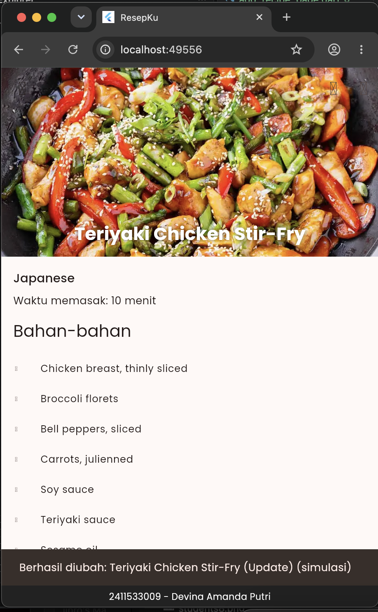
2. SnackBar notifikasi sukses PUT
Tampilan Latihan 2b: Proses Hapus Resep (DELETE)
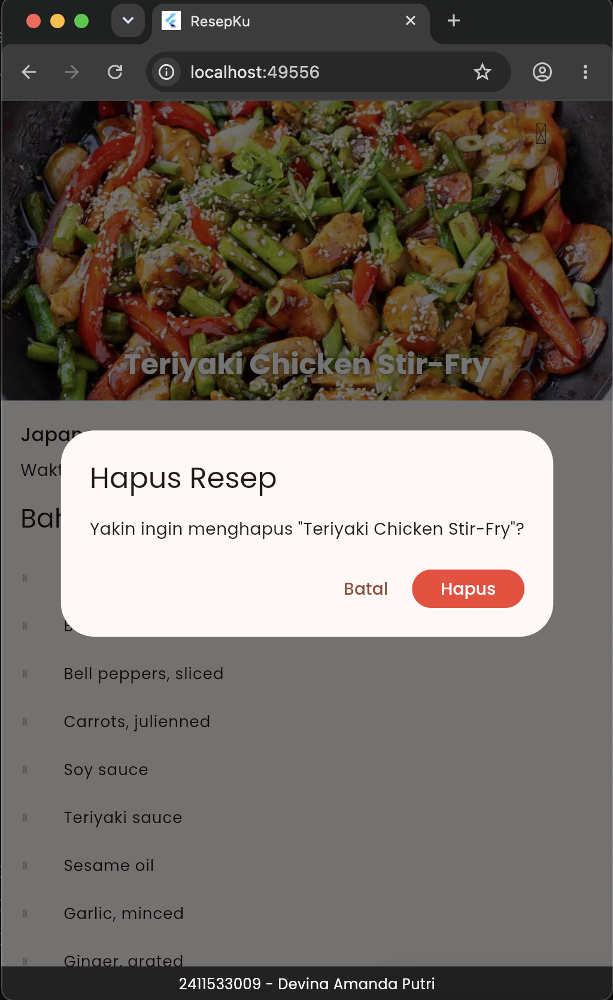
1. Dialog konfirmasi hapus resep
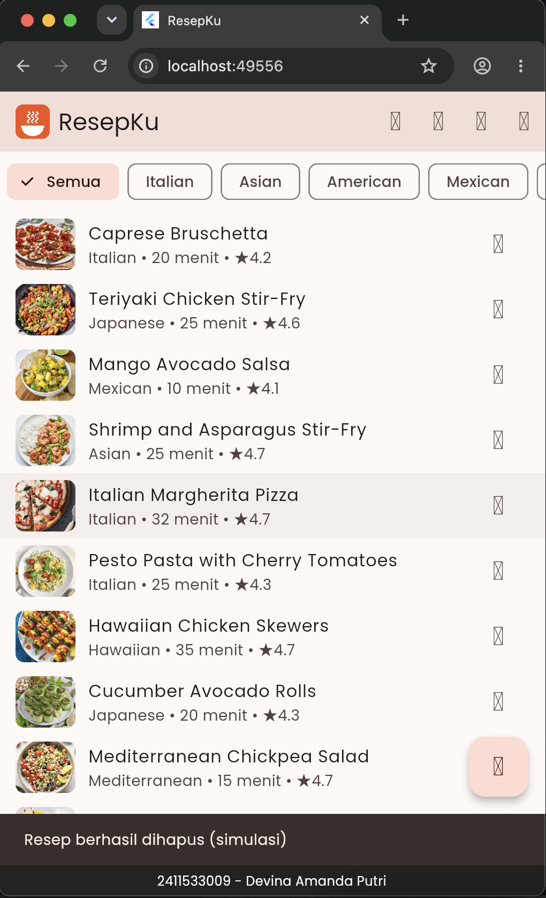
2. SnackBar notifikasi sukses DELETE
Praktikum Modul VIII berhasil dilaksanakan dengan mengintegrasikan aplikasi ResepKu ke REST API publik dummyjson.com. Pemisahan lapisan komunikasi jaringan ke dalam class RecipeService yang dikombinasikan dengan FutureBuilder memungkinkan aplikasi mengelola siklus hidup pengambilan data asinkronus (loading, success, dan error state) secara terstruktur serta mendukung interaksi pengguna melalui pull-to-refresh, pencarian data (GET search), hingga manipulasi data menggunakan metode HTTP POST, PUT, dan DELETE. Penerapan pengecekan siklus hidup widget (mounted) dan inisialisasi Future di dalam initState() terbukti krusial dalam menjaga stabilitas dan efisiensi performa aplikasi mobile berbasis Flutter.